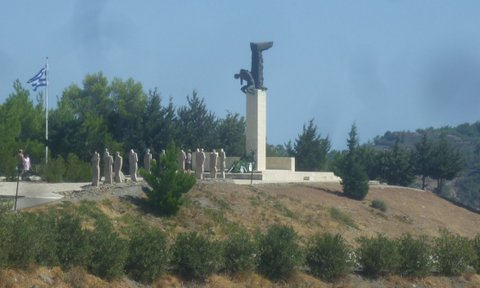

AK-Distomo
Start
|
12. November 2013
Auch im Jahre 2013: Schuld war nur Hitler!
Die Stuttgarter Staatsanwaltschaft und das Massaker von Sant‘Anna di Stazzema
Der 12. August 1944 in Sant'Anna di Stazzema
560 Tote, Säuglinge, Kinder, Frauen und Alte. Die angebliche "Partisanenbekämpfungsaktion" in den Morgenstunden des 12. August 1944
in dem toskanischen Dorf Sant’Anna di Stazzema war in Wirklichkeit ein grausamer Akt gegen unbeteiligte Zivilbevölkerung.
Ahnungs- und wehrlos waren sie, als die Einheiten der 16. SS-Panzergrenadierdivision "Reichsführer SS" kamen, um das Dorf und die Bewohner
zu vernichten. Die SS wütete furchtbar und gnadenlos. Jeder dieser gut ausgebildeten SS-Angehörigen wusste, dass keine Partisanen
im Dorf waren. Sie wussten, dass die Division ein Völkerrechtsverbrechen beging.
Der heutige Vorsitzende des Vereins der Opfer von Sant‘Anna di Stazzema, der damals zehnjährige Enrico Pieri, verlor an diesem Tag alles:
seine Eltern, seine Geschwister, Onkel, Tanten, Cousins und Cousinen, insgesamt 27 Familienmitglieder. Eine amerikanische Militärkommission
der nachrückenden Alliierten erhob kurze Zeit nach dem Massaker Zeugenbeweise, oft präzise Berichte über diesen Augustmorgen. Doch
die Akten wurden in den folgenden Jahren kaum bearbeitet.
Mehr...
|
9. Oktober 2013
Kongress "Gerechtigkeit und Entschädigung" für die Opfer
70 Jahre nach Wehrmachtsverbrechen in Griechenland
Zum Jahrestag des Massakers von Ano Viannos lud der "Nationalrat für die Forderungen gegenüber Deutschland"
zu einem zweitägigen Kongress ein, um über die Fragen der Entschädigung und Reparationen, der Kriegsschäden, des Raubs antiker
Schätze während der Besatzung, aber auch über Erinnerungsarbeit auszutauschen. Es wurde einige neuere Forschungsarbeiten
mit regionalen Schwerpunkt vorgestellt, wie zu Kriegsschäden und Kunstraub auf Kreta, aber auch Geschichtsprojekte für
Schüler und die Sozialgeschichte der Region Viannos.
Alle griechischen Widerstandsorganisationen gegen die deutsche Besatzung waren auf dem Kongress präsent. Viele
Teilnehmer kamen aus anderen "Märtyrerorten" wie Distomo, Kommeno, Hortatis und Kalavryta, wo die Wehrmacht Massaker
verübt hat. Die Bedeutung des Kongresses wurde durch die Teilnahme der Widerstandslegende Manolis Glezos sichtbar, der am 30. Mai 1941 mit Apostolos
Sandas die Hakenkreuzfahne von der Akropolis in Athen holte.
Mehr...
|

|
Gedenkstätte für die Opfer des Massakers von Viannos bei Amira, Kreta.
|
Klicken Sie auf das Bild, um es größer anzuzeigen.
Am 13. und 14. September 1943 erschossen Wehrmachtseinheiten als Vergeltung für einen Partisanenangriff etwa 450 Männer über 16
Jahren aus den umliegenden Dörfern in der Provinz Viannos und Ierapetra auf Kreta. Der damalige Befehlshaber, General Friedrich-Wilhelm Müller,
wurde für diese und andere Kriegserbrechen auf Kreta durch ein griechisches Gericht zum Tode verurteilt und 1947 am
Jahrestag der deutschen Invasion auf Kreta hingerichtet. Vor deutschen Gerichten wurde niemand wegen des Massakers von Viannos vor Gericht
gestellt. Eine Entschädigung an die Opfer wurde durch die Bundesrepublik Deutschland nie gezahlt.
|
5. Oktober 2013
The New York Times:
As Germans Push Austerity, Greeks Press Nazi-Era Claims
AMIRAS, Greece — As they moved through the isolated villages in this region in 1943, systematically killing men in a
reprisal for an attack on a small outpost, German soldiers dragged Giannis Syngelakis’s father from his home here and
shot him in the head. Within two days, more than 400 men were dead and the women left behind struggled with the monstrous
task of burying so many corpses.
Mr. Syngelakis, who was 7 then, still wants payback. And in pursuing a demand for reparations from Germany, he
reflects a growing movement here, fueled not just by historical grievances but also by deep resentment among his countrymen
over Germany’s current power to dictate budget austerity to the fiscally crippled Greek government.
zum Artikel The New York Times...
|
13. September 2013
Martin Klingner und der AK-Distomo werden vom "Nationalrat für die Forderungen gegenüber Deutschland"
ausgezeichnet
Im Rahmen des Kongress "Gerechtigkeit und Entschädigung" wird Martin Klingner und der AK-Distomo für
sein langjähriges Engagement geehrt. Die Laudatio wurde von Manolis Glezos gehalten.
Manolis Glezos ist einer der bekanntesten griechischen Widerstandskämpfer. Am 30. Mai 1941 holte er gemeinsam mit Apostolos Sandas
die Hakenkreuzfahne von der Akropolis in Athen.
Klicken Sie auf das Bild, um es größer anzuzeigen.
|
13. September 2013
Die Entwicklung der Entschädigungsprozesse wegen der Kriegsverbrechen des 2. Weltkrieges in Italien
Redebeitrag von Rechtsanwalt Joachim Lau auf dem Kongress
"Gerechtigkeit und Entschädigung" für die Opfer 70 Jahre nach Wehrmachtsverbrechen in Griechenland
Zum Jahrestag des Massakers von Ano Viannos lud der "Nationalrat für die Forderungen gegenüber Deutschland"
zu einem zweitägigen Kongress ein. Im Folgenden ist der Redebeitrag von Rechtsanwalt Joachim Lau dokumentiert:
A.)
Während des 2. Weltkrieges hatten die deutschen Truppe nicht nur circa 8000 - 10.000 italienische Staatsbürger jüdischen
Glaubens nach Auschwitz und Treblinka deportiert und dort ermordet. Auf dem Rückzug der deutschen Truppen waren zigtausende Ermordete
in der Zivilbevölkerung zu beklagen und es wurden circa 650.000 Junge Soldaten des aufgelösten italienischen Heeres nach Deutschland
zur Zwangsarbeit verschleppt.
Deutschland weigerte sich seit Jahrzehnten diese daraus erwachsene Schäden zu ersetzten. Bis zur Wiedervereinigung verwies es
auf die Stundungsvereinbarung des Londoner Schuldenvertrages und auf die Klagesperre in Art. 1 des
6. Teil des Deutschlandvertrages und nach dem Abschluß des Einigungsvertrages behauptete Deutschland, es sei
alles erledigt, und als dies von den Gerichten nicht verstanden wurde, wurde die Verjährung eingewandt und als
auch dieses Argument brüchig wurde, wurde der Mangel der Gegenseitigkeit der Staatshaftung von den oberen deutschen Richtern
erfunden, um in Deutschland die Ansprüche ausländischer Kriegsgeschädigter abzuwehren.
Mehr...
|
19. April 2013
Schulden muss jeder zahlen - auch Deutschland!
Anfang April berichteten deutsche Zeitungen über ein Gutachten der griechischen Regierung
zum Thema Reparationsansprüche, die Deutschland aufgrund der in Griechenland begangenen Verbrechen
während des 2. Weltkriegs zu zahlen hat. Das griechische Finanzministerium erarbeitete die Studie,
die bislang als "streng geheim" eingestuft ist. Aufgrund des großen Einfluss der deutschen Regierung
auf die Vergabe der EU-Hilfsgelder, die Griechenland dringend benötigt, scheut die griechische Regierung
eine Veröffentlichung und damit einen Konflikt mit Deutschland.
Als ein wesentlicher Bestandteil des Gutachtens gelten die Ansprüche aufgrund von
Gräueltaten und Zerstörungen durch die damalige Besatzungsmacht Deutschland sowie
eine Zwangsanleihe, die Nazi-Deutschland im Frühjahr 1942 dem griechischen Staat
abverlangte. Auf Basis eines Kreditvertrages wurde die griechische Regierung gezwungen, Gelder
an die deutschen Besatzer zu zahlen. Nazi-Deutschland finanziert mit diesen Geldern u.a. die
Armeen der Wehrmacht in Afrika. Die Summe der aus diesem Vertrag begründeten Rückzahlungen beträgt
nach heutigen Schätzungen 5 Milliarden Euro ohne Zinsen.
Mehr...
|
|